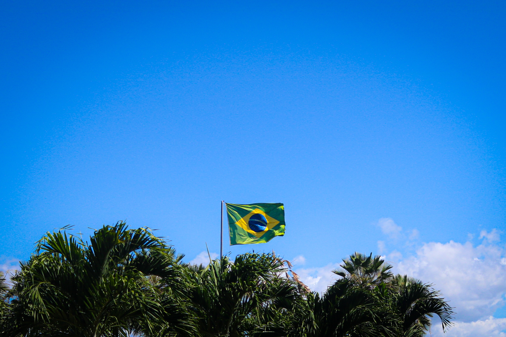
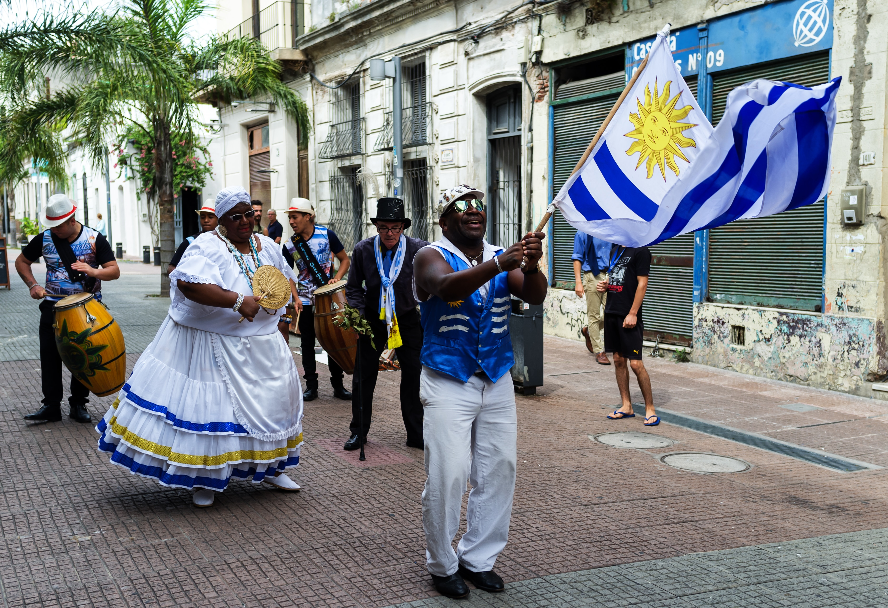

Sobre mim
Aqui está algumas informações e curiosidade a mais sobre mim

Objetivo
Completar o curso técnico que está paralelo com a escola, e realizar um intercâmbio para aprimorar meu inglês.
Cursos
Estou realizando um curso técnico sobre desenvolvimento de sistemas, em paralelo ao segundo ano do ensino médio.
Premios
Já conquistei alguns títulos relacionados com a escola, como a olimpíada canguru de matemática, e também já fiquei em segundo lugar no Hackathon Gravataí.
Minha história
Países do mundo
Aqui estão os países que já visitei ao redor do mundo

